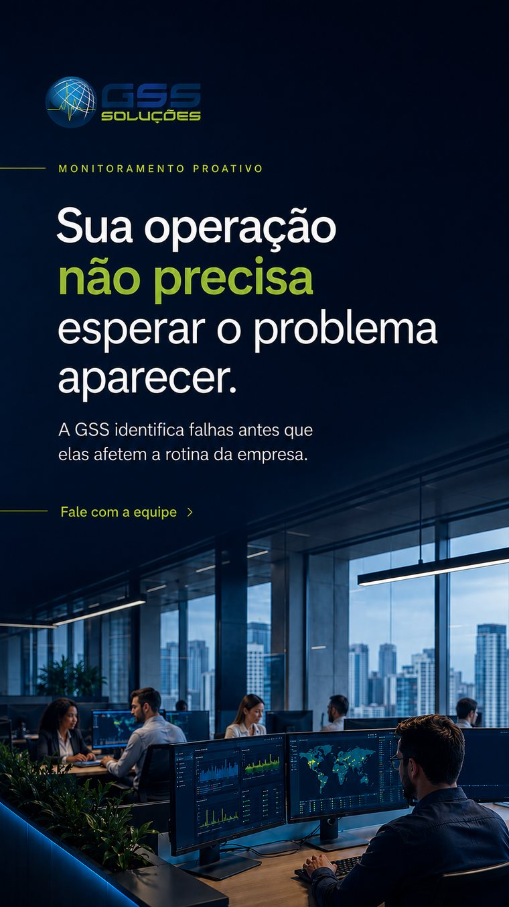
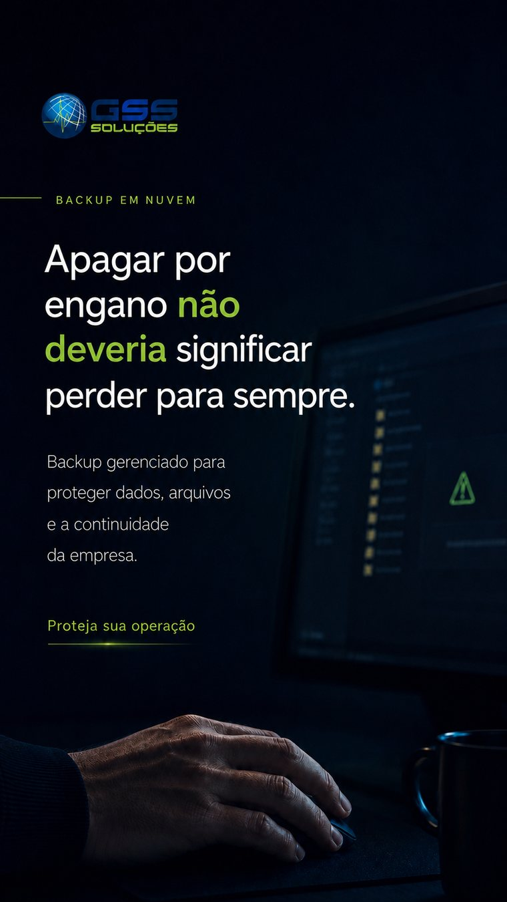
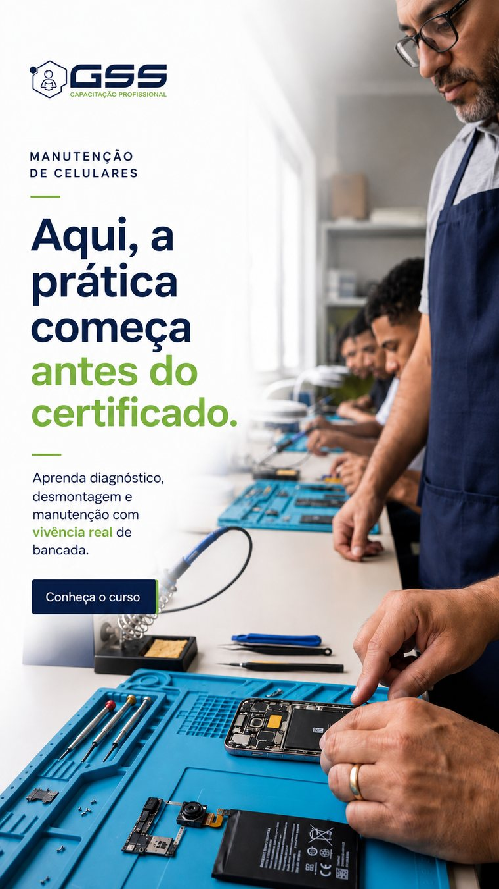

Duas marcas
Públicos e objetivos diferentes pedem abordagens próprias — cada uma com sua própria voz dentro da mesma rotina.
PROPOSTA DE CONTEÚDO + DIREÇÃO CRIATIVA
GSS Soluções + GSS Capacitação Profissional
Duas marcas. Dois públicos. Uma rotina de comunicação construída com intenção — sem atrito com o trabalho de Feed já em andamento.
PONTO DE PARTIDA
Quando a gente olhou para as duas marcas, a primeira percepção foi bem clara: não existe falta de conteúdo.
A GSS já tem serviços, cursos, equipe, estrutura, conhecimento e muita coisa acontecendo no dia a dia.
Então, para nós, o trabalho não começa tentando reinventar a comunicação. Começa organizando melhor tudo o que já existe e dando uma função mais clara para os Stories.
A ideia é criar uma presença mais constante, mas sem publicar só por publicar. Cada entrada precisa ter um motivo: informar, gerar confiança, aproximar ou conduzir para uma ação.
É daí que parte toda a proposta.
As duas marcas já possuem identidade, conteúdo, imagens, serviços e produtos para comunicar. O trabalho não começa do zero — a oportunidade está em organizar melhor esse material e transformar os Stories em uma presença mais constante, leve e pensada para o formato.
Públicos e objetivos diferentes pedem abordagens próprias — cada uma com sua própria voz dentro da mesma rotina.
Equipe, cursos, serviços, estrutura, eventos e materiais reais para explorar, sem depender de produção do zero.
Uma rotina que não depende de adaptar o feed toda vez e respeita a identidade visual já trabalhada.
Cada Story deve informar, aproximar, gerar interesse ou conduzir para uma ação — nunca preencher espaço.
DUAS FRENTES
Aqui tem um ponto importante da nossa leitura.
GSS Soluções e GSS Capacitação compartilham uma estrutura de marca, mas não deveriam conversar da mesma forma.
Na Soluções, o papel dos Stories é reforçar confiança, estrutura e capacidade técnica. Mostrar o que acontece por trás de um atendimento, explicar problemas de tecnologia de forma simples e transformar conhecimento técnico em percepção de segurança para a empresa cliente.
Já na Capacitação, a comunicação pode ficar mais próxima e mais humana. Mostrar prática, professores, alunos, mercado e a aplicação real do que está sendo ensinado.
A estratégia é integrada. Mas cada público precisa sentir que aquela conversa foi feita para ele.
AUTORIDADE QUE GERA CONFIANÇA
A comunicação reforça a GSS como parceira de tecnologia para empresas, mostrando estrutura, experiência e prevenção com clareza.
CONHECIMENTO QUE LEVA À PRÁTICA
A comunicação pode ser mais próxima e dinâmica, mostrando o que se aprende, como se aprende e onde essa capacitação pode levar o aluno.
DIREÇÃO VISUAL
A identidade atual permanece reconhecível, mas o formato ganha mais hierarquia, mais presença de imagem e menos elementos concorrendo pela atenção.
Essas peças não foram pensadas como templates fechados. Elas mostram uma direção.
O que queremos preservar são os códigos que já fazem a GSS ser reconhecida, mas adaptando essa identidade para uma lógica mais natural de Story: menos informação competindo na mesma tela, hierarquia mais clara, imagem com mais presença e mensagens que possam ser entendidas rapidamente.
E o mesmo vale para o texto. A headline que aparece em um estudo não fica engessada para a produção final.
A redação é calibrada a cada ciclo, de acordo com a pauta, o objetivo e o tom que fizer mais sentido naquele momento.
O sistema visual cria consistência. O conteúdo continua tendo liberdade.
Fundo técnico, fotografia forte, mensagens objetivas e uso controlado dos códigos da marca.


Imagem humana, experiência de bancada e espaço para a mensagem respirar.

Estudos conceituais — a linguagem final será refinada no início do projeto, com base no material e nas referências compartilhados.
OPERAÇÃO
A estratégia é aprovada de forma macro para 30 dias, mas a execução acontece em lotes semanais. Assim, a comunicação mantém consistência sem perder capacidade de reagir ao negócio.
Na operação, a gente quis resolver duas coisas ao mesmo tempo: ter planejamento e, ainda assim, não deixar a comunicação engessada.
Por isso, primeiro construímos um roadmap para os trinta dias, definindo temas, objetivos e ganchos das duas marcas. Essa é a visão macro.
A partir daí, a execução acontece em lotes semanais.
Isso permite ajustar uma pauta, aproveitar uma oportunidade ou reagir a alguma demanda do negócio sem desmontar o planejamento inteiro.
Os lotes são entregues com pelo menos quarenta e oito horas úteis de antecedência, e trabalhamos com retorno de ajustes em até vinte e quatro horas úteis.
É uma esteira pensada para dar previsibilidade sem perder agilidade.
Construção do Roadmap Estratégico para os 30 dias. Definição prévia de todos os temas, ganchos e objetivos por marca para alinhamento e aprovação macro da direção da GSS.
Com a rota do mês aprovada, a produção visual e redação final ocorrem em lotes semanais. Isso garante que a comunicação absorva oportunidades de mercado de última hora sem engessar a estratégia.
O lote semanal fechado será enviado com no mínimo 48h úteis de antecedência da janela de publicação. Para manter a agilidade da esteira, os ajustes finais devem ser retornados em até 24h úteis.
Acompanhamento dos indicadores do lote para refinar as ações das semanas seguintes.
Frequência prevista: um dia sim, um dia não, por marca. 30 entradas × 3 telas narrativas em média.
Publicação: realizada pela equipe GSS, seguindo pauta, roteiro e lotes aprovados.
Escopo técnico: design de telas estáticas e pequenas animações gráficas nativas para gerar dinamismo aos Stories. Não contempla captação audiovisual, formatação para Reels ou edição de vídeos brutos (cortes/legendagem).
05 / PROPOSTA COMERCIAL
Planejamento, pautas, textos, direção criativa e produção dos Stories para as duas marcas (GSS Soluções + GSS Capacitação Profissional).
Para esse início, estruturamos a proposta como um primeiro ciclo mensal.
O valor de tabela para a operação das duas marcas é de dois mil cento e noventa reais, e estamos aplicando uma condição inaugural de vinte por cento, chegando a mil setecentos e cinquenta e dois reais neste primeiro ciclo.
O pagamento é dividido em duas etapas: metade na aprovação e início do planejamento, e a segunda metade depois da aprovação do primeiro lote semanal, antes da continuidade da produção dos próximos lotes.
Esse primeiro ciclo não cria uma renovação automática.
A ideia é começar, validar a dinâmica na prática e, se fizer sentido para os dois lados, evoluir para uma relação de prazo maior.
Válida exclusivamente para o escopo deste primeiro ciclo, como incentivo para iniciarmos a estruturação da nova rotina de forma ágil.
Para facilitar o fluxo e proteger a previsibilidade da operação:
Modelo de entrada: prestação de serviços referente a 1 (um) ciclo mensal de implementação e testes de formato. Sem renovação automática padrão atrelada a esta etapa.
Opção de contrato anual (valor protegido): caso a GSS opte por formalizar um contrato de 12 meses até o encerramento do primeiro ciclo, a Orvalia Studio mantém o valor promocional de R$ 1.752,00/mês durante todo o período.
Meios de pagamento: PIX, Boleto Bancário ou Cartão de Crédito (via link de pagamento seguro).
Nota fiscal: emissão de nota fiscal acompanhando o pagamento de cada etapa.
Início: após aprovação, formalização e pagamento da 1ª etapa.
Validade da proposta: condições comerciais válidas até 08/09/2026.
“Constância não é estar presente todos os dias.
É fazer cada presença construir alguma coisa.”
ACEITE E APROVAÇÃO
Ao clicar abaixo, o WhatsApp abre com uma mensagem de aceite já preenchida. Depois seguimos com a formalização do primeiro ciclo.
Aprovar proposta pelo WhatsApp ↗ Abrir proposta em PDF